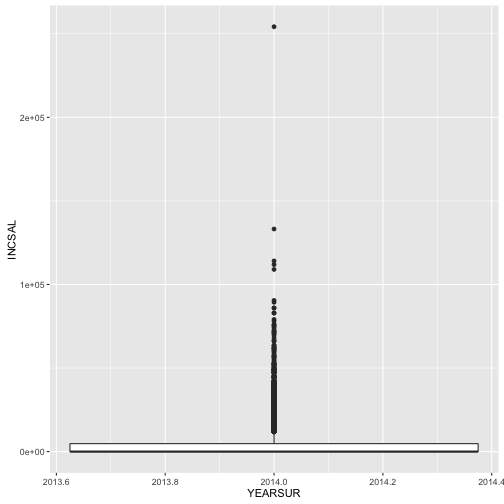
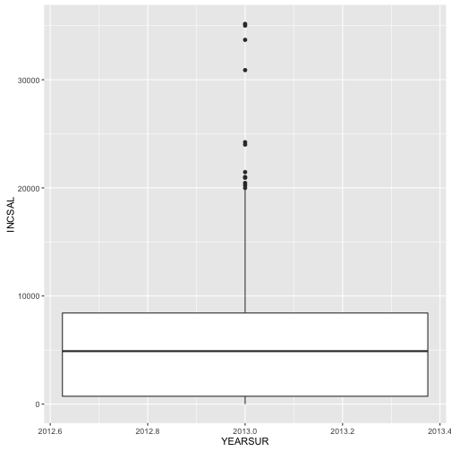
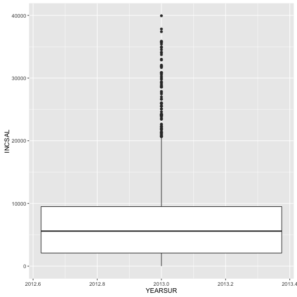
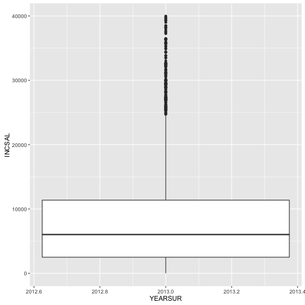
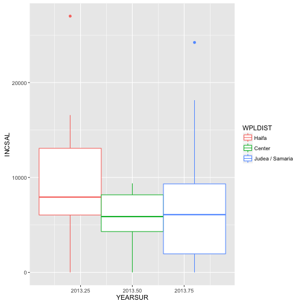

library(ggplot2)
library(foreign)
library(Hmisc)
## Loading required package: lattice
## Loading required package: survival
## Loading required package: Formula
##
## Attaching package: 'Hmisc'
## The following objects are masked from 'package:base':
##
## format.pval, round.POSIXt, trunc.POSIXt, units
library(reshape2)
library(dplyr)
##
## Attaching package: 'dplyr'
## The following objects are masked from 'package:Hmisc':
##
## combine, src, summarize
## The following objects are masked from 'package:stats':
##
## filter, lag
## The following objects are masked from 'package:base':
##
## intersect, setdiff, setequal, union
library(tidyr)
##
## Attaching package: 'tidyr'
## The following object is masked from 'package:reshape2':
##
## smiths
file456 <- spss.get("/Users/AbuDavid/school/census/f456/f456ind.por", use.value.labels=TRUE)
## Warning in `levels<-`(`*tmp*`, value = if (nl == nL) as.character(labels)
## else paste0(labels, : duplicated levels in factors are deprecated
Begin with data from Public Use File 2014, file f456.
#
subSetInd2014<-dplyr::select(file456, YEARSUR, WPLDIST,INCSAL)
head(subSetInd2014)
## YEARSUR WPLDIST INCSAL
## 1 2014 <NA> 0
## 2 2014 <NA> 0
## 3 2014 Center 5555
## 4 2014 Gush Dan 8081
## 5 2014 Tel-Aviv 6446
## 6 2014 Tel-Aviv 3473
summary(subSetInd2014)
## YEARSUR WPLDIST INCSAL
## Min. :2014 Center : 3010 Min. : 0
## 1st Qu.:2014 Tel-Aviv: 2551 1st Qu.: 0
## Median :2014 North : 1766 Median : 0
## Mean :2014 Haifa : 1522 Mean : 3403
## 3rd Qu.:2014 Gush Dan: 1468 3rd Qu.: 4749
## Max. :2014 (Other) : 1516 Max. :254219
## NA's :16117
names(subSetInd2014)
## [1] "YEARSUR" "WPLDIST" "INCSAL"
ggplot(aes(y=INCSAL,
x=YEARSUR
),
data=subSetInd2014)+geom_boxplot()
 Plot is stretched by very few individuals with extremely high incomes.
Remove these to see the normal salaries more clearly.
```r
richRemoved <- subSetInd2014
# richRemoved[richRemoved$INCSAL > 1200,] #testSyntax
count(richRemoved[richRemoved$INCSAL > 40000,]) # > $10k USD/month
```
```
## # A tibble: 1 × 1
## n
## <int>
## 1 130
```
```r
# remove the 130 richest, regraph
richRemoved<-richRemoved[richRemoved$INCSAL<40000,]
# ggplot(aes(y=INCSAL,x=YEARSUR),
# data=richRemoved)+geom_boxplot()
naRemoved <-richRemoved %>% filter(complete.cases(richRemoved))
# ggplot(aes(y=INCSAL, x=YEARSUR ),
# data=naRemoved)+geom_boxplot()
```
Here we look at the non-wealthy in the entire country, defined as those who make less than 40k NIS /month, approximately $10k USD/month.
In shekels, their mean income is 7,488. The middle 50% of them have incomes lying between 2,344 and 10,234 NIS/month.
```r
haifaData2014<- naRemoved %>% filter(WPLDIST == "Haifa")
## ggplot(aes(y=INCSAL,
## x=YEARSUR,
## col="green"
## ),
## data=haifaData)+geom_boxplot()
## summary(haifaData)
centerData2014 <-naRemoved %>% filter(WPLDIST == "Center")
## ggplot(aes(y=INCSAL,
## x=YEARSUR,
## col="blue"),
## data=centerData)+geom_boxplot()
## summary(centerData)
```
When looking at Haifa, the mean income falls by around 500 NIS to 6944,
50% of incomes are between 2084 and 9448 NIS.
Mean income in the Center is around 500 NIS more than the national mean, and more than 1000 NIS more than the Haifa mean, at 8017.
50% of the non-wealthy in Center earn between 2582 and 11,000 NIS. The first quartile is 500 NIS above that of Haifa and the third quartile is 1150 NIS about that of Haifa (11,000 vs. 9448).
Open new dataSet, Household Expenditure Survey 2013, in file f457.
```r
judeaData2014<- naRemoved %>% filter(WPLDIST == "Judea / Samaria")
## ggplot(aes(y=INCSAL,
## x=YEARSUR,
## col="orange"
## ),
## data=judeaData)+geom_boxplot()
summary(judeaData)
```
```
## Error in summary(judeaData): object 'judeaData' not found
```
```r
areas <- c("Haifa","Center","Judea / Samaria")
file457 <- spss.get("/Users/AbuDavid/school/census/f457/f457ind.por", use.value.labels=TRUE)
```
```
## Warning in `levels<-`(`*tmp*`, value = if (nl == nL) as.character(labels)
## else paste0(labels, : duplicated levels in factors are deprecated
```
```r
subSetInd2013<-dplyr::select(file457, YEARSUR, WPLDIST,INCSAL)
richRemoved2013<-subSetInd2013[subSetInd2013$INCSAL<40000,]
naRemoved2013 <-richRemoved2013 %>% filter(complete.cases(richRemoved2013))
judeaData2013<- naRemoved2013%>% filter(WPLDIST == "Judea / Samaria")
haifaData2013<- naRemoved2013 %>% filter(WPLDIST == "Haifa")
centerData2013<- naRemoved2013 %>% filter(WPLDIST == "Center")
national2013<-naRemoved2013
summary(national2013)
```
```
## YEARSUR WPLDIST INCSAL
## Min. :2013 Jerusalem :1300 Min. : 0
## 1st Qu.:2013 North :1857 1st Qu.: 2468
## Median :2013 Haifa :1668 Median : 5690
## Mean :2013 Center :3335 Mean : 7319
## 3rd Qu.:2013 Tel-Aviv :2987 3rd Qu.: 9837
## Max. :2013 Gush Dan :1582 Max. :39967
## Judea / Samaria: 315
```
```r
summary(judeaData2013)
```
```
## YEARSUR WPLDIST INCSAL
## Min. :2013 Jerusalem : 0 Min. : 0
## 1st Qu.:2013 North : 0 1st Qu.: 725
## Median :2013 Haifa : 0 Median : 4899
## Mean :2013 Center : 0 Mean : 5977
## 3rd Qu.:2013 Tel-Aviv : 0 3rd Qu.: 8425
## Max. :2013 Gush Dan : 0 Max. :35162
## Judea / Samaria:315
```
```r
summary(haifaData2013)
```
```
## YEARSUR WPLDIST INCSAL
## Min. :2013 Jerusalem : 0 Min. : 0
## 1st Qu.:2013 North : 0 1st Qu.: 2086
## Median :2013 Haifa :1668 Median : 5584
## Mean :2013 Center : 0 Mean : 7129
## 3rd Qu.:2013 Tel-Aviv : 0 3rd Qu.: 9496
## Max. :2013 Gush Dan : 0 Max. :39938
## Judea / Samaria: 0
```
```r
summary(centerData2013)
```
```
## YEARSUR WPLDIST INCSAL
## Min. :2013 Jerusalem : 0 Min. : 0
## 1st Qu.:2013 North : 0 1st Qu.: 2500
## Median :2013 Haifa : 0 Median : 6024
## Mean :2013 Center :3335 Mean : 8040
## 3rd Qu.:2013 Tel-Aviv : 0 3rd Qu.:11368
## Max. :2013 Gush Dan : 0 Max. :39967
## Judea / Samaria: 0
```
ggplot(aes(y=INCSAL,
x=YEARSUR),
data=judeaData2013)+geom_boxplot()
## Don't know how to automatically pick scale for object of type labelled/integer. Defaulting to continuous.
## Don't know how to automatically pick scale for object of type labelled/integer. Defaulting to continuous.

ggplot(aes(y=INCSAL,
x=YEARSUR
),
data=haifaData2013)+geom_boxplot()
## Don't know how to automatically pick scale for object of type labelled/integer. Defaulting to continuous.
## Don't know how to automatically pick scale for object of type labelled/integer. Defaulting to continuous.

ggplot(aes(y=INCSAL,
x=YEARSUR
),
data=centerData2013)+geom_boxplot()
## Don't know how to automatically pick scale for object of type labelled/integer. Defaulting to continuous.
## Don't know how to automatically pick scale for object of type labelled/integer. Defaulting to continuous.

test1 <- head(centerData2013)
test2 <- head(haifaData2013)
test3 <- head(judeaData2013)
test6 <- head(centerData2014)
test4 <- head(haifaData2014)
test5 <- head(judeaData2014)
test <- rbind(test1, test2, test3, test4, test5, test6)
ggplot(aes(y=INCSAL,
x=YEARSUR,
col=WPLDIST
),
data=test)+geom_boxplot()
## Don't know how to automatically pick scale for object of type labelled/integer. Defaulting to continuous.
## Don't know how to automatically pick scale for object of type labelled/integer. Defaulting to continuous.

#
# summary(test$INCSAL)
#
# mean(test1$YEARSUR)
# mean(test6$YEARSUR)
#
#